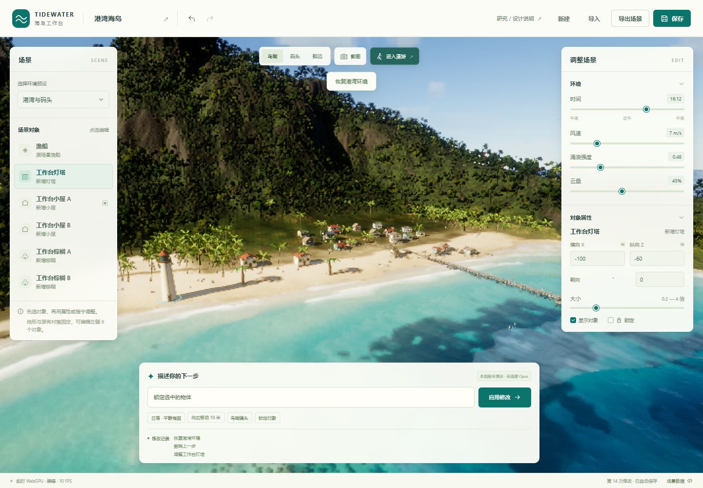
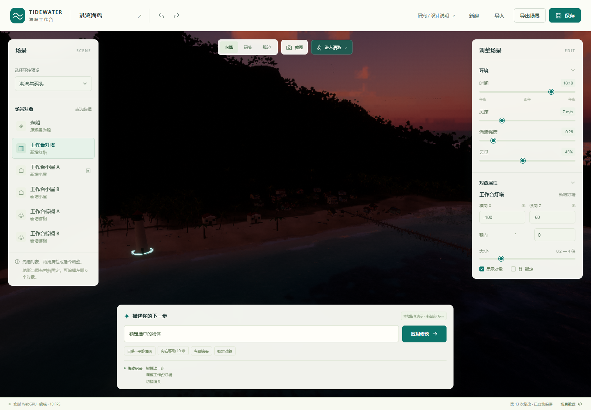

海水与岸线
远海波面、冲岸浪、泡沫、喷溅、尾流、焦散和水下水线。
四级 256² FFT 波谱 + 岸浪与泡沫纹理模拟 + 水材质反射/折射。
OceanFFT当前工作台已接入 Tidewater，支持对象、环境和镜头的持续编辑。下一步的产品方向是：用户用绘笔和标记确定布局，模型补充内容，再逐步确认外观、空间和交互。本页把已实现的能力与后续设计分别说明。

01 / 库的能力
Tidewater 是自研引擎上的浏览器海岛钓鱼应用。它尚未封装为通用编辑器 SDK；当前版本适合研究、fork 和接口改造。
远海波面、冲岸浪、泡沫、喷溅、尾流、焦散和水下水线。
四级 256² FFT 波谱 + 岸浪与泡沫纹理模拟 + 水材质反射/折射。
OceanFFT时段变化、太阳与月亮、体积云、云影、大气和空气透视。
Hillaire 大气 LUT + 体积云光线步进 + 时间复用；默认 SkyProClouds。
Atmosphere地形、村落、码头、植被、海滩道具、角色、鸟、鱼、蟹和鲸。
程序几何与外部资产组成世界，自研 WebGPU/WGSL 引擎逐帧渲染。
App 世界组装步行、游泳、驾驶船、18 种鱼、搏鱼张力、出售与装备升级。
输入与角色控制、船体水面采样、数值状态机、栖息地/时间概率。
Game代码驱动 3D 场景与渲染；扫描道具、纹理、人物动画和录音有外部来源。海浪是实时图形近似，不能据此用于工程水动力预测。查看固定版本的资产与技术来源。
02 / 当前产品 已实现
本次实现了固定海岛的本地编辑闭环。正在探索的下一步面向滨水场景与关卡创作者，支持从布局创建不同场景；目标用户与付费需求仍需验证。
原地形、村落与岸线不能任意编辑。六个对象来自固定注册表，新增物体没有新增碰撞、导航或真实点光源。
三个场景预设只改环境；镜头独立选择。工作台没有账号、云发布、视频、任意资产生成或真实模型 API。
“生成一座全新城市”需要接入新的世界系统，超出当前动作范围。
03 / 理解探索 后续设计
一句话可以开始创作。持续可控的创作，还需要把布局、对象、关系与已确认内容保存下来，让下一轮生成有明确依据。
让模型自由改写整个场景代码，可以产生新的内容；仅靠提示，无法保证只修改某个区域、保留其余结果或稳定满足全部要求。
创作目标要逐步转成可执行的布局、对象修改范围与验收条件。
产品保存对象身份、位置、关联、锁定状态和版本，模型按这些依据提出修改或生成新组件。
数量、距离与连通等要求由程序检查；风格、氛围与“像不像”仍由用户判断。
新岛屿、新建筑和新布局，需要新的地形与对象创建接口。当前六个对象的控制不能自动覆盖任意生成世界。
新内容接入统一的场景结构后，才能继续选择、局部修改、恢复和交付。
图片适合确认构图、材质与氛围；单张图没有完整的尺寸、背面与遮挡关系。生成 3D 时应同时读取原始布局和对象标记，未展示的空间需要补全并通过不同视角检查。相关研究中的图像、相机与几何条件。
产品既帮助生成，也负责保存、编辑与运行生成后的世界。
指定模型、材质和角色，保留必须使用的资产。模型可以补充新的组件。
保存对象数量、尺寸、间距、连接和修改范围。几何校验、碰撞与导航需要相应模块。
定义触发器、任务状态、角色行为和通关条件，并在试玩时执行。
支持点选、锁定、局部生成、方案比较、撤销和恢复，保存可继续编辑的工程。
04 / 创作流程 尚未实现
绘笔标记 → 生成对应图 → 进一步生成 3D，是一个可探索的入口。结构化场景方案始终保留，概念图和粗模分别帮助用户确认不同内容。
用区域画陆地和水面，用线画道路，用图标放建筑，用箭头标移动路线。指定比例和必须保留的内容。
用户确定：位置、范围与关系保存区域、对象、尺寸和连接关系。模型识别自由草图后先给出解释，用户可以修正；语义绘笔直接记录类型。
共同依据：可编辑的布局与对象按布局生成参考画面，确认建筑造型、材质、光照和氛围。
先放地形、建筑体块和道路，旋转观察或漫游，确认尺寸和空间关系。
依据已确认布局、粗模和视觉参考，补充几何、材质、植被、水面与光照。新资产保持独立对象身份。
原始结构与参考图共同参与生成指定修改对象或区域，保留已确认部分。按用途添加任务或镜头，验证结果，再保存工程与分享浏览器场景。
下一轮创作继续使用同一份作品一次具体创作
用户画出岛屿和道路，标记村庄、灯塔与码头，再指定 灯塔在高处，村庄有路连接码头
。模型补充造型，概念图确认风格，粗模确认空间。
下一轮要求 码头往东移动，灯塔保持原样
，产品限定修改对象与相关连接，并比较实际改动。玩法阶段再设置 到达灯塔后解锁船只
。
05 / 现有页面扩展 产品路线
已有预览、对象面板、属性、指令、镜头和历史提供编辑基础。下面把扩展落实到具体页面区域；优先级是本次设计建议，尚未开始这些功能的实现。
从顶部新建、保存和导出扩展命名、封面、复制与版本快照。布局变体属于同一海岛作品；新世界类型另需构建系统。
增加移动、旋转和缩放手柄，多选、对齐与材质属性。操作继续共用撤销历史；真实灯光需接照明系统。
在预设镜头外保存相机姿态、画幅与截图设置。后续时间轴与视频导出还需要时间控制和编码。
| 现有区域 | 建议扩展的界面 | 需要新增的能力 |
|---|---|---|
| 中央 3D 预览 P1 | 布局 / 3D 切换；陆地、道路、区域与对象绘笔；比例和标记 | 保存二维布局、对象身份与空间关系；再接地形和对象创建接口 |
| 下方指令区 P1 | 生成前显示计划、目标区域和将保留的对象；确认后执行 | 模型返回结构化方案；修改范围、版本和事务校验 |
| 左侧对象列表 P2 | 对象 / 图层 / 资源标签；新增、复制、删除、导入与替换；关联画布标记 | 扩展固定注册表，增加可创建对象、资产格式适配、资源销毁与依赖记录 |
| 右侧属性面板 P2 | 尺寸、数量、间距和连接约束；校验结果与修复入口 | 可执行的约束与检查器；路线可达还需碰撞和导航 |
| 预览与镜头工具 P3 | 布局、概念图、粗模对照；固定参考相机与多视角验收 | 图像与 3D 生成服务、相机对齐、预览产物和任务状态管理 |
| 历史 / 保存 / 导出 贯穿各阶段 | 保存布局方案、生成版本和引用资源；局部差异与版本恢复 | 把配置存档扩展为完整场景工程；浏览器分享需发布服务 |
| 进入漫游 P4 | 按用途增加任务 / 触发器面板，或镜头 / 时间轴面板 | 任务状态、事件执行、碰撞导航，或关键帧与镜头序列 |
初期围绕滨水场景验证布局和规则，其他方向按目标用户逐步选择。
用户画海岸、道路与建筑位置，模型补充地形、造型和细节。控制重点是位置、比例与连接。
围绕用户已有建筑、角色和道具生成环境。控制重点是指定资产的身份、尺度和替换范围。
按数量、面积、距离和连通要求生成不同布局。条件由程序检查，用户选择并继续编辑方案。
设置出生点、路线、交互与通关目标。玩法在运行阶段执行，需验证任务状态与路线可达。
编辑镜头顺序、轨迹、时长和场景事件。控制重点是时间轴和每一段可重复播放的行为。
以地形、道路和建筑轮廓为依据补充视觉内容。数据精度决定空间依据，缺失部分仍需补全。规则生成几何的技术参考 ↗
用户画两个岛、一座桥和一个港口，确认场景方案，再生成可选择、可修改的粗模。优先验证布局确实参与生成、局部修改保留已确认对象、失败可以恢复。随后再增加视觉细节与玩法。
06 / 一次实际操作 已实现
每一步都有明确目标和可见反馈。文字与属性面板修改同一份场景；布局、环境和镜头可以分别调整。
点击对象列表或画面中的对象。属性对应稳定 ID cabin-a。
输入 把选中的物体向右移动10米
。X 从 −35 到 −25，真实几何和面板一起更新。右是世界 X 轴正方向。
输入 改成日落，海浪平静一点
。只修改时间和涌浪；多项修改可一次撤销。
撤销/重做来比较，满意后锁定对象。选择镜头，保存配置，导出 PNG 与 JSON。

07 / 当前控制原理
模型可以理解描述，产品负责准确执行。浏览器 GPU 持续绘制世界；模型不需要具备生图接口才能协助创作这种场景。
[
{ "type": "object", "id": "cabin-a",
"values": { "x": -25, "rotation": 20 } },
{ "type": "environment",
"values": { "timeOfDay": 18.3, "swell": 0.264 } },
{ "type": "camera", "preset": "overview" }
]对象参数：X/Z、朝向、统一缩放、显示、锁定。环境参数：时间、风速、涌浪、云量。未知对象、字段、越界数值与已锁定对象变换会被拒绝。
Opus 可以协助实现着色器、程序几何和世界组装，再根据运行截图迭代。画面来自 WebGPU 引擎，资源也可能来自资产库。仓库描述不能证明全部代码或美术由模型独立生成。
未来后端把指令、对象摘要、选择 ID、范围与场景修订号发给模型；模型返回动作。现有执行器继续负责校验和历史，拒绝过期响应。
尚未接入。当前界面使用确定性的本地规则解析。
08 / 产品价值
直接让模型写代码适合增加新能力。稳定接口让用户在产品运行时编辑已有作品，把每次创作变成可以控制和恢复的操作。
| 用户需要 | 直接让模型生成代码 | 工作台的控制 |
|---|---|---|
| 只移动小屋 A | 模型定位源码并改写实现 | 具体 ID + 变换参数 |
| 改日落，保留布局 | 依赖提示与代码修改范围 | 环境与对象分开保存 |
| 回到上一版 | 管理并恢复代码版本 | 事务历史，一次撤销 |
| 继续编辑同一作品 | 运行、资源和版本需另行管理 | 保存配置，重新导入 |
| 遇到缺失的雨天模块 | 可能生成尚未验证的实现 | 明确拒绝，保留当前场景 |
接下来优先探索语义绘笔、场景方案与规则校验，再接图像和 3D 生成服务。玩法、镜头与分享按目标用户选择。查看具体页面扩展与优先级。以上属于产品设计，当前实现仍为固定海岛的本地编辑工作台。
09 / 原有工作台验证与边界
以下记录来自此前工作台测试，不覆盖上面尚未实现的生成流程。实测设备：默认 Chrome WebGPU 后端，Intel Gen12lp；页面 1440 × 1000。结果属于这个设备和配置。
在仓库根目录运行 node projects/014-tidewater/tools/serve.mjs，访问 http://127.0.0.1:4196/。素材本地保存，运行时无 npm 依赖。
首次数百 shader 编译可能超过一分钟。工作台默认渲染比例 0.5，关闭海雾与运动模糊，并等待单帧 GPU 完成。显式后端尝试曾驱动挂起，软件适配器资源不足；没有 FPS 保证。
JSON 保存编辑配置，不保存逐帧波浪、玩家/动物状态、游戏经济或世界模型。seed 尚未控制原版随机系统。
先亲手改动一次